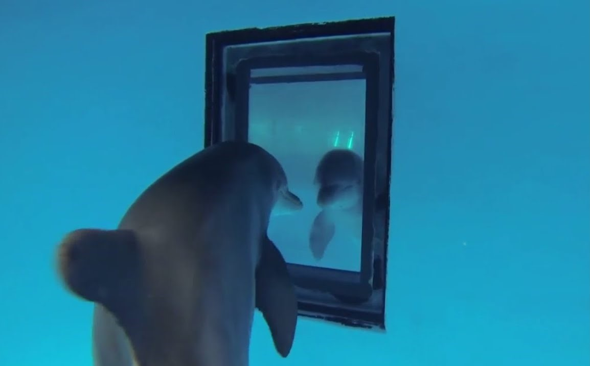
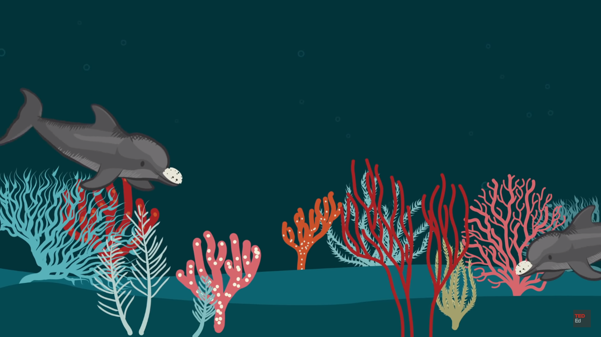
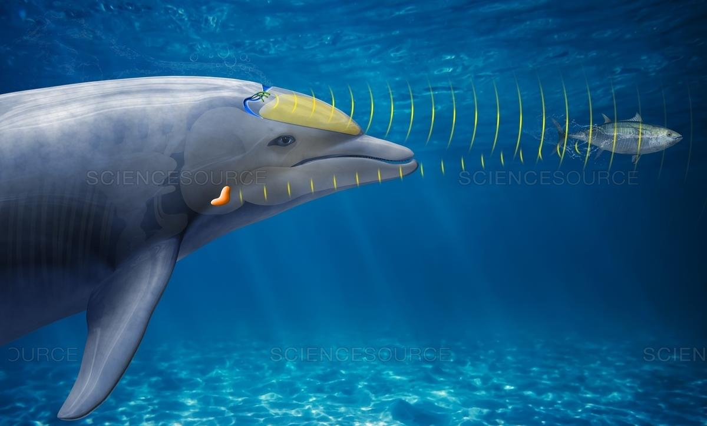

Dolphin's Intelligence
Dolphins behave in a way that suggests intelligence: they are one of the smartest animal species on earth.
Dolphins have human-like skills. Cognitive psychologist Diana Reiss gives a fair amount of information about their human-like behavior in her ted talk. They recognize themselves in the mirror indicating self-awareness, something most animals fail to do. Dolphins pass down their knowledge especially their hunting techniques and communication skills generation after generation, just like us.
Dolphins learn quickly. Diana Reiss states, “Much of their learning is similar to what we see in young children.” They possess advanced language comprehension. Lori Marino, founder and executive director of The Kimmela Center for Animal Advocacy, tells us that dolphins are able to understand the two parts of human language –symbols that stand for objects and actions and the syntax that governs how they are structured. Marino narrates one of her observations: one group of bottlenose dolphins off the Australian coast has learned to cover their rostrums with sponges when rooting in sharp corals.
Dolphin's Communication
Dolphin’s communication appears to be extensive and complex
I. At the first level: communication occurs within the dolphin itself by process called echolocation:
Echolocation allows dolphins to see by sound. Wonderpolis organization provides us with some information about this process. So, first dolphins send a high frequency click, when the sound waves hit an object, it travels back to the dolphin as an echo, by interpreting these echoes, the dolphin is able to determine the speed, distance, size, direction of travel, and even the shape of objects in the water around them. This information is critical for dolphins to find food and navigate in dark or murky waters.
II. Dolphins also communicate between each other:
This communication is still so vague to scientists. They believe dolphins have their own language, but they have not been able to crack the code yet.
First, dolphin’s main way of communication is by whistles. Each dolphin has a distinctive one called signature whistle. It can tell other dolphins which dolphin is around. When in distress, a dolphin omits its Signature whistle very loudly, alarming others.
*Dolphins Whistling*
Second, when dolphins are close, they use body language to communicate. The dolphin research center provides us with some common body movements: bending head and tail ventrally or dorsally, Rolling eyes -showing the whites-, rapid, side to side shaking of the head.
Third, they sometimes use touch to communicate. Some common ways of this communication: touch another animal with open mouth, touch or rub another animal with closed mouth, tap or stroke with pectoral fins.